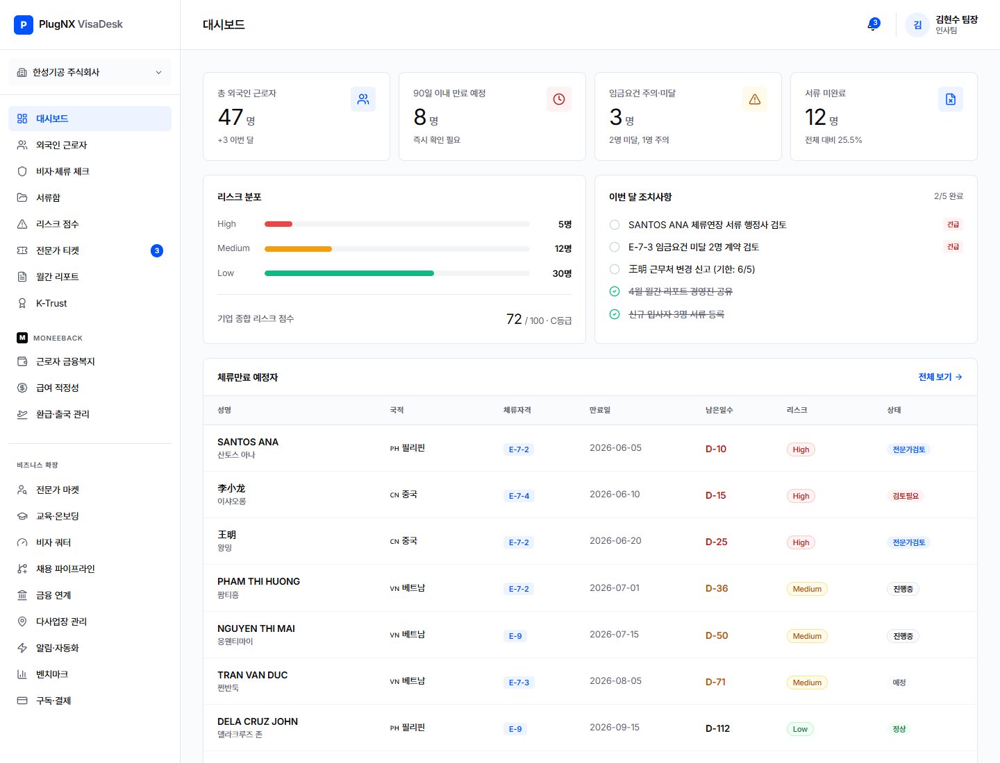

계정 소싱, 연락처 검증, 무료 진단, 세미나, 리스크 리포트를 하나의 실험 루프로 묶습니다.
산업단지, 협회, 채용공고, 전문가 추천으로 제조 중심 계정 생성.
대표, HR/총무, 공장장, 관리부서 연락처 확보.
무료 외국인 고용 리스크 진단 신청 또는 세미나 참여.
외국인 10명 이상, 반복 관리 이슈, 예산 소유자 확인.
Starter·Growth·Compliance 가격 실험으로 유료 전환 가설 검증.
VisaDesk의 기회는 채용 자체가 아니라 채용 이후의 체류, 신고, 보험, 임금, 서류 기록 공백입니다.
2026년 고용허가제 기준. 규모는 조정되지만 채용 수요는 지속됩니다.
E-9, E-8, E-10 등으로 현장 인력 유입 범위가 넓습니다.
지역 양성, 취업, 정주가 연결되며 장기 기록 관리 가치가 올라갑니다.
허가, 교육, 등록, 신고, 보험, 서류가 분산되어 있습니다.
법무부, 교육부, 고용노동부, 여성가족부 정책을 함께 보면 VisaDesk의 기회는 단일 비자가 아니라 전환·추천·고용·정주 기록을 관리하는 운영 레이어입니다.
경제, 안전, 통합, 인권, 인프라 5대 목표. 지역기반 이민정책과 기술혁신 기반 행정 고도화가 핵심입니다.
2027년 유학생 30만 명 유치, 지역-대학-기업 TF, D-2 활동 완화, 유학생 취업·정주 연결을 추진합니다.
E-9 등 단순노무 인력이 기업추천과 점수요건을 통해 E-7-4 숙련기능인력으로 전환되는 경로가 커졌습니다.
2024년 E-9 도입규모를 16만5천 명으로 확대하고 음식점업, 임업, 광업까지 허용 업종을 넓혔습니다.
지자체가 지역 산업과 인구감소 대응을 위해 외국인 유치와 정착에 직접 관여하는 구조가 강화됩니다.
가족, 자녀, 생활환경, 정주 지원이 별도 정책 축으로 유지됩니다. BackWon·ForeignID의 장기 B2C 기반입니다.
돌봄 시범사업은 신원검증, 교육, 고충처리, 근무환경 기록이 중요한 확장 시장임을 보여줍니다.
K-CORE, 비자체계 단순화, 디지털 사전심사, AI 분류심사로 민간 RegTech 진입 공간을 더 명확히 합니다.
점수는 페인, 접근성, 지불의사, 반복성, 규제 복잡도를 합산했습니다.
VisaDesk가 직원, 체류, 임금, 서류 메타데이터를 받습니다.
대표와 담당자에게 만료, 누락, 신고 리스크를 보여줍니다.
등록 직원은 BackWon 환급·금융 흐름으로 이동합니다.
여권, ARC, 계좌, 전자서명 신뢰 레이어가 쌓입니다.
근로자 만족과 전문가 이력이 재계약 이유가 됩니다.
8주는 제품 완성 기간이 아니라 구매의사, 채널, 메시지, 가격을 동시에 검증하는 실험 기간입니다.
PoC 데모는 대시보드, 만료 알림, 임금요건 체크, 서류 누락, 전문가 에스컬레이션을 5분 안에 보여주는 흐름으로 설계합니다.

현재 랜딩은 C- 수준입니다. canonical, schema, OG, llms.txt, RSS, 출처형 가이드가 우선순위입니다.
Foundational 55점, Intelligence 57점. 인용 준비도는 낮습니다.
canonical, OG, JSON-LD, sitemap, llms.txt, RSS를 먼저 추가합니다.
외국인 고용관리, 비자 준법, 보험, 환급 pillar를 만듭니다.
회사명, 도메인, 지역, 산업, source URL을 기본 컬럼으로 수집합니다.
외국인 고용 신호, 채용공고, E-9/E-7 언급, 담당자 정보를 보강합니다.
외국인 10명 이상, 제조/요양/농축산, HR 공백 신호로 우선순위를 매깁니다.
valid 이메일만 Smartlead/Instantly로 보내고 bounce 1% 미만을 유지합니다.
대표에게는 벌금·고용제한·대체채용 비용을, HR/총무에게는 체류만료·서류누락·임금요건 자동화를 말합니다.
체류만료나 임금요건 한 건만 놓쳐도 구독료보다 큰 비용이 날 수 있습니다.
90일 내 만료, 서류 누락, 임금요건 주의, 전문가 검토 케이스를 보여줍니다.
동종 제조업에서 자주 나오는 리스크 패턴을 짧게 공유합니다.
무료 진단만 받고 CRM에서 제외할 수 있다는 낮은 마찰의 CTA로 닫습니다.
비자 자격, 고용 준법, 연금/환급 가능성, 세무, 노무, KYC/AML, 전자서명 효력은 운영 참고자료이며 전문가 검토가 필요합니다.